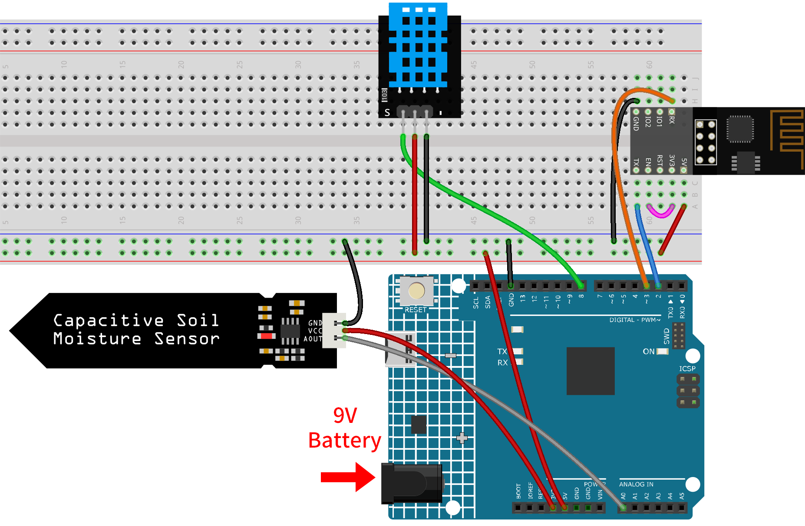
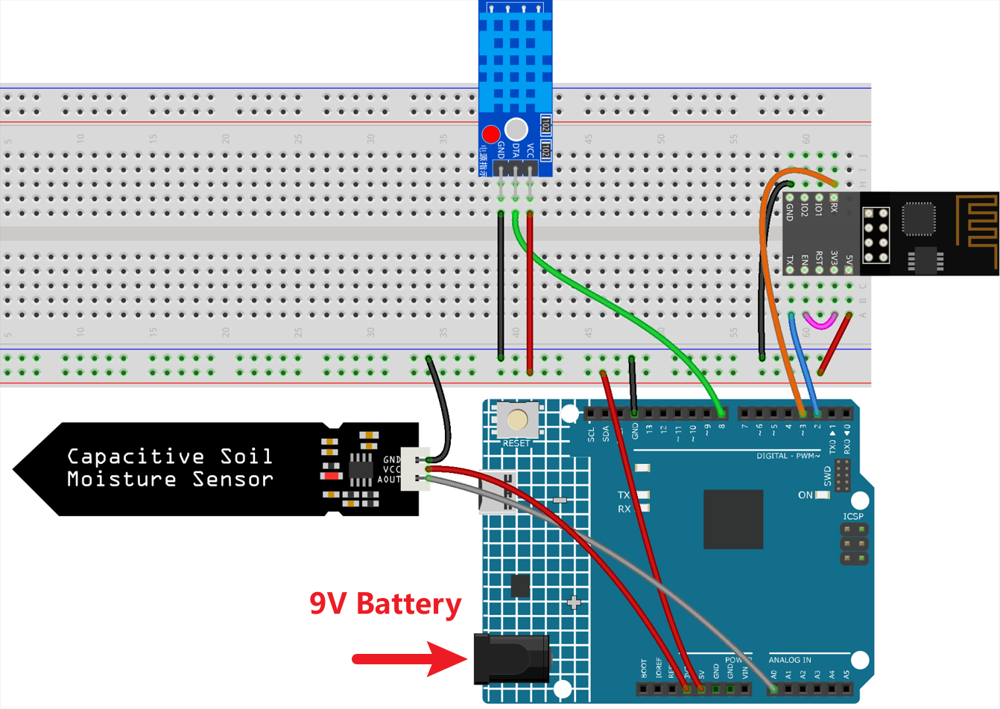
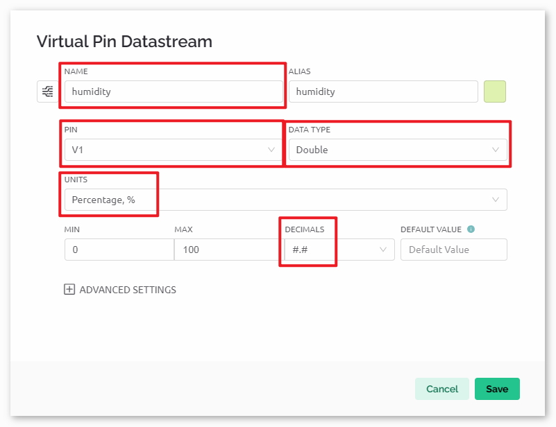
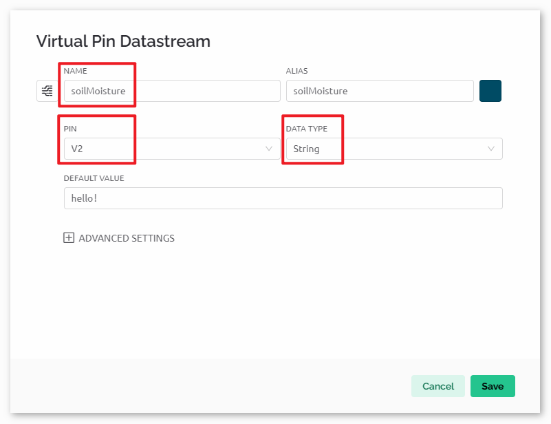
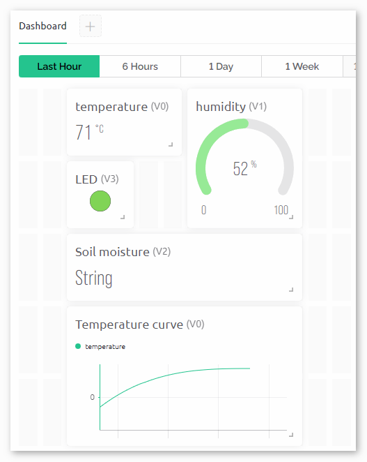

注釈
こんにちは、SunFounderのRaspberry Pi & Arduino & ESP32愛好家コミュニティへようこそ！Facebook上でRaspberry Pi、Arduino、ESP32についてもっと深く掘り下げ、他の愛好家と交流しましょう。
参加する理由は？
エキスパートサポート：コミュニティやチームの助けを借りて、販売後の問題や技術的な課題を解決します。
学び＆共有：ヒントやチュートリアルを交換してスキルを向上させましょう。
独占的なプレビュー：新製品の発表や先行プレビューに早期アクセスしましょう。
特別割引：最新製品の独占割引をお楽しみください。
祭りのプロモーションとギフト：ギフトや祝日のプロモーションに参加しましょう。
👉 私たちと一緒に探索し、創造する準備はできていますか？[ここ]をクリックして今すぐ参加しましょう！
Blynkを使用した植物モニター
このプロジェクトは、現在の温度、湿度、光強度、土壌湿度を検出する植物監視デモシステムを作成します。データはBlynkに表示され、土壌の湿度レベルに基づいた提案とともに表示されます。
1. 回路の組み立て
注釈
ESP8266モジュールは、安定した動作環境を提供するために高電流を必要とするので、9Vバッテリーが接続されていることを確認してください。
キットには異なるバージョンのDHT11モジュールが含まれている場合があります。お手持ちのモジュールに応じた配線方法を確認してください。




2. Blynkの設定
注釈
Blynkに慣れていない場合は、まずこれら二つのチュートリアルを読むことを強くお勧めします。 Blynkで始める方法 はBlynkの初心者向けガイドであり、ESP8266の設定とBlynkへの登録方法も含まれています。 Blynkを使用した炎警報システム は簡単な例ですが、手順の説明がより詳細です。
2.1 テンプレートの作成
まず、Blynk上で「Plant Monitor」テンプレートを作成する必要があります。
2.2 データストリーム
esp8266およびuno r4ボードからデータを受け取るために、 Datastream ページで Virtual Pin タイプの Datastreams を作成します。
以下の図に従ってVirtual Pin V0を作成してください:
Virtual Pin V0 の名前を temperature に設定します。 DATA TYPE を Double に設定し、MINとMAXを -100 と 100 に設定します。 UNITS を Celsius,℃ に設定します。

以下の図に従ってVirtual Pin V1を作成してください:
Virtual Pin V1 の名前を humidity に設定します。 DATA TYPE を Double に設定し、MINとMAXを 0 と 100 に設定します。 UNITS を Percentage,% に設定します。

以下の図に従ってVirtual Pin V2を作成してください:
Virtual Pin V2 の名前を soilMoisture に設定します。 DATA TYPE を String に設定します。

以下の図に従ってVirtual Pin V3を作成してください:
Virtual Pin V3 の名前を LED に設定します。 DATA TYPE を Integer に設定し、MINとMAXを 0 と 255 に設定します。


2.3 ウェブダッシュボード
植物モニターと対話するためにも、 Web Dashboard を設定する必要があります。
次の図に従ってWeb Dashboardを設定します。ラベル、ゲージ、LED、チャートなどのウィジェットを使用しました。各ウィジェットを対応する仮想ピンに結びつけてください。


2.4 テンプレートの保存
最後に、テンプレートを保存することを忘れないでください。
3. コードを実行する
パス
ultimate-sensor-kit\iot_project\wifi\03-Plant_monitorの下で03-Plant_monitor.inoファイルを開くか、このコードを Arduino IDE にコピーしてください。"Plant Monitor"テンプレートを用いてBlynkデバイスを作成します。その後、
BLYNK_TEMPLATE_ID、BLYNK_TEMPLATE_NAME、およびBLYNK_AUTH_TOKENを自分自身のものに置き換えてください。#define BLYNK_TEMPLATE_ID "TMPxxxxxxx" #define BLYNK_TEMPLATE_NAME "Plant Monitor" #define BLYNK_AUTH_TOKEN "xxxxxxxxxxxxx"
使用するWiFiの
ssidとpasswordも入力する必要があります。char ssid[] = "your_ssid"; char pass[] = "your_password";
正しいボードとポートを選択した後、 書き込み ボタンをクリックしてください。
シリアルモニター（ボーレートを115200に設定）を開き、成功した接続などのプロンプトが表示されるのを待ちます。

注釈
接続する際に
ESP is not respondingというメッセージが表示された場合は、次の手順に従ってください。9Vバッテリーが接続されていることを確認してください。
RSTピンを1秒間GNDに接続して、ESP8266モジュールをリセットします。その後、接続を解除してください。
R4ボード上のリセットボタンを押します。
以上の操作を3～5回繰り返す場合もありますので、しばらくお待ちください。
4. コードの説明
ライブラリと定数の初期化:
このコードの部分では、必要なライブラリを含み、Blynkのテンプレート情報やWiFiの認証情報など、特定の定数を定義します。
#define BLYNK_TEMPLATE_ID "TMPLxxxxxxx" #define BLYNK_TEMPLATE_NAME "Plant Monitor" #define BLYNK_AUTH_TOKEN "xxxxxxxxxxx" #define BLYNK_PRINT Serial #include <ESP8266_Lib.h> #include <BlynkSimpleShieldEsp8266.h> char ssid[] = "your_ssid"; char pass[] = "your_password"; #include <SoftwareSerial.h> SoftwareSerial EspSerial(2, 3); #define ESP8266_BAUD 115200 ESP8266 wifi(&EspSerial);
DHTセンサーの設定:
DHTセンサーを初期化し、温度と湿度を格納するための関連変数を定義します。
#include <DHT.h> #define DHTPIN 8 #define DHTTYPE DHT11 DHT dht(DHTPIN, DHTTYPE); float temperature; float humidity;
土壌湿度センサーの設定:
土壌湿度センサーの設定です。乾燥した状態と湿った状態の閾値が定義されます。
実際の状況に応じて、
wetSoilとdrySoilを自分で測定する必要があります。土が乾燥しているときに土壌湿度モジュールの読み取り値をdrySoilとして記録し、最も湿っていると考える適切な範囲内で土壌湿度モジュールの読み取り値をwetSoilとして記録します。#define wetSoil 320 #define drySoil 400 const int moistureSensorPin = A0; int moisture; String soilStatus;
タイマーの設定:
データの読み取りと更新の頻度を制御するタイマーを設定します。
BlynkTimer timer;
セットアップ関数内での初期化:
このセクションでは、シリアル通信を設定し、ESP8266をWiFiに設定し、DHTセンサーを開始します。
timer.setInterval(5000L, myTimerEvent)を使用して、setup()内でタイマー間隔を設定します。ここでは、myTimerEvent()関数を 5000ms ごとに実行するように設定しています。timer.setInterval(1000L, myTimerEvent)の第一引数を変更して、myTimerEventの実行間隔を変更することができます。
void setup() { Serial.begin(115200); EspSerial.begin(ESP8266_BAUD); delay(10); Blynk.config(wifi, BLYNK_AUTH_TOKEN); Blynk.connectWiFi(ssid, pass); timer.setInterval(5000L, myTimerEvent); dht.begin(); }
loop()関数:
メインループは、Blynkの処理とタイマーを実行します。
void loop() { Blynk.run(); timer.run(); }
sendData()関数:
この関数は、DHTセンサーと土壌湿度センサーから値を読み取り、土の状態を判断し、データをBlynkアプリに送信します。
Blynk.virtualWrite(vPin, value)を使用して、Blynkの仮想ピンにデータを送信します。詳しくは Blynk.virtualWrite() を参照してください。Blynk.setProperty(V3, "color", color)を使用して、Blynk上のLEDの色を設定します。詳細は Blynk - LED 。
void sendData() { // (code for reading and determining values) Blynk.virtualWrite(V0, temperature); Blynk.virtualWrite(V1, humidity); Blynk.virtualWrite(V2, soilStatus); Blynk.virtualWrite(V3, 255); // set blynk LED brightness Blynk.setProperty(V3, "color", color); // set blynk LED color }
シリアルモニターへのデータ出力:
この関数は、Arduino IDEのシリアルモニターでローカルに読み取り値を確認しデバッグするのに便利です。
void printData() { // (code for printing values to serial monitor) }
参考